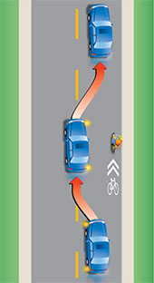
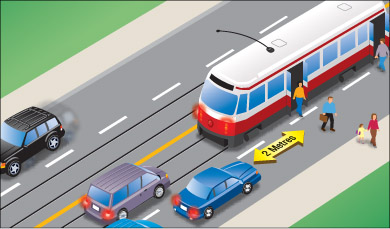
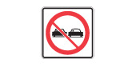
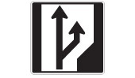
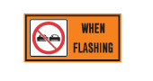
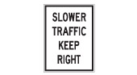

DEFINE changing position IS a manoeuvre THAT changes lanes OR passes another vehicle
出處Source
超車規則Passing rules
Wise Lab · 安大略省 MTO 駕駛手冊Wise Lab · Ontario MTO Driver’s Handbook
把手冊裡的超車內容寫成形式化規則：一套小而固定、讀起來仍像英文的規則語言，每條都連回它來自的原句。The handbook’s passing content as formal rules, in a small rule language that still reads like English. Every rule links back to the sentence it came from.
來源Source: Ontario MTO Driver’s Handbook版本Edition: Updated August 26, 2022 · Published November 28, 2016離線副本Offline copy: 2026-10-06 (handbooks/mto/)單位Units: metricmetric
規則語言 v1Rule language v1
每條敘述都套用固定模板：大寫關鍵字負責邏輯，中間的一般英文負責內容。Each statement fills a fixed template: keywords in capitals carry the logic, plain English between them carries the content.
規則語言 · 01Rule language · 01
一段手冊原文，和由它寫成的規則，逐部分標示。One handbook passage and the rule written from it, part by part.
When passing a cyclist, drivers of motor vehicles must maintain a minimum distance of one metre, where practical between their vehicle and the cyclist. (See Diagram 2-11.) Failure to do so may result in a fine and an additional two demerit points on the driver’s record.
規則語言 · 02Rule language · 02
五種敘述，各有固定模板。… 填一般英文，… 可省略。Five kinds of statement, each with a fixed template. … is plain English; … is optional.
規則語言 · 03Rule language · 03
這就是全部的關鍵字。不是關鍵字的部分都是一般英文，照用詞規範寫。The complete keyword set. Everything that is not a keyword is plain English, written by the wording rules.
大寫是關鍵字 · 綠色名稱在此定義 · 灰色名稱填一般英文（其中也可用 AND OR NOT 連接片語）· { } 可重複 · [ ] 可省略 · | 表示「或」CAPITALS are keywords · green names are defined here · grey names are plain English (where AND OR NOT may also join phrases) · { } repeats · [ ] is optional · | means or
規則語言 · 04Rule language · 04
法律效力只來自手冊用語。由上往下取第一個符合的；FORCE FROM 記下是哪一條。Legal force comes only from the handbook’s wording. Take the first line that applies; FORCE FROM records which.
Passing within 30 metres of a pedestrian crossover is not permitted.→3.1.1a
You may drive on the right shoulder only to pass a vehicle turning left …→3.2.4a
Avoid passing, changing lanes and crossing traffic.→3.3.2a
Never overtake and pass another vehicle unless you are sure …→2.1b
… watch carefully for people suddenly opening doors …→3.4.1a
用語和預設不一致時，維持預設並加 M 標記，不靠猜測提高效力。“Don’t pass moving snow plows under any conditions” 沒有法律用語，所以維持 SHOULD NOT 並標 M。Wording and default disagree? Keep the default and add an M flag; force is never raised by guessing. “Don’t pass moving snow plows under any conditions” has no legal word, so it stays SHOULD NOT with M. 3.4.9a
超車規則：19 條法規、52 條建議、7 個 M 標記。In the passing rules: 19 law, 52 advice, 7 M flags.
規則語言 · 05Rule language · 05
關鍵字之間的英文也有固定規範，同一件事永遠只有一種說法。The English between the keywords follows fixed rules, so one thing is always said one way.
先用 “a …”，再用 “the …”，不用 “you”。用原文撐得起的最具體角色。“a …” first, then “the …”; never “you”. Use the most specific role the source supports.
And do not speed up when another driver is trying to pass you.→a driver being passed MUST NOT speed up 3.6.1b
規則永遠只用一種說法；手冊用詞不一致處標 V。The rules always use one phrase; where the handbook drifts, a V flag.
用數字與簡短單位；比較只用 at least、at most、more than、less than、within … of。Digits and short units; compare only with at least, at most, more than, less than, within … of.
照原文保留，標成 [?…] 並標記；不發明門檻。Kept as written, marked [?…] and flagged; no threshold is invented.
… you have enough space and time to complete the move safely.→enoughJ space and time to complete it safelyJ 2.1a
會結束的義務用 UNTIL。「X 之前」寫成 WHEN about to X，「X 之後」寫成 WHEN the driver has X-ed；程序靠步驟順序。A duty that ends uses UNTIL. “Before X” is WHEN about to X, “after X” is WHEN the driver has X-ed; a procedure uses step order.
“so that …”、“leaving …” 寫成 BECAUSE this …；理由不限制規則何時適用。“So that …” and “leaving …” become BECAUSE this …; a reason never limits when a rule applies.
… leaving the other lanes clear for passing.→BECAUSE this leaves the other lanes clear for passing 3.2.2c
規則裡的 “if” 是事件，寫成 WHEN；IF … THEN 只用在程序分支。An “if” in a rule is an event, written WHEN; IF … THEN only branches a procedure.
If a large bus or truck passes you …→WHEN a passing bus or truck pushes the trailer out of position 3.5.2c
清單引言（“Bring the following:”）把角色、情態詞與子句傳給每一項，每項各成一條。以清單下定義：DEFINE 詞 IS 類別 THAT includes a, b or c。A list lead (“Bring the following:”) gives its role, modal and clauses to every item, and each item is its own statement. A definition by list: DEFINE term IS kind THAT includes a, b or c.
規則語言 · 06Rule language · 06
手冊沒說清楚的，規則也不補。四種標記標在字上，四種標在整條敘述上；數字是超車規則裡的個數。What the handbook leaves open stays open. Four flags mark words, four mark a whole statement; the count is for the passing rules.
手冊Handbook
左邊是手冊原文（你的 96 段，加上全書掃描補進的 8 句），右邊是規則；每條線把原文連到它寫成的規則，滑鼠移到任一邊會標出兩端，點一下就跳到另一端。手冊的圖放在用到它的規則底下。Left: the handbook text (your 96 passages, plus 8 sentences added from the census). Right: the rules. Each line joins a passage to its rules; hover either side to light up both ends, click to jump to the other end. The handbook’s pictures sit under the rules that use them.
每條規則附上原句、效力來源與標記；手冊的圖放在用到它的規則底下。Each rule with its source sentence, legal force and flags; the handbook’s pictures sit under the rules that use them.
手冊原文Handbook text
Changing positions 頁 · 第 2 章Changing positions page · Chapter 2
手冊放 Passing 章節的那一頁。The page that holds the handbook’s Passing section.
Changing your position on the road involves changing lanes or overtaking and passing another vehicle. Before beginning, be sure you have enough space and time to complete the move safely.
Changing lanes · 不屬於這個主題not part of this topic
Passing
Passing is changing lanes to move past a slower vehicle. While all public roads have speed limits, not all vehicles travel at the same speed. For example, cyclists, road service vehicles and drivers ahead that are preparing to turn are usually slower than the through traffic. You may want to pass some slow-moving vehicles when you are following them.
Never overtake and pass another vehicle unless you are sure you can do so without danger to yourself or others. Don't pass moving snow plows under any conditions. If in doubt, do not pass.
Here are the steps for passing a vehicle:

Passing within 30 metres of a pedestrian crossover is not permitted. Passing left of a centreline is not permitted 30 metres from a bridge, viaduct or tunnel. Don't attempt to pass when approaching the crest of a hill or on a curve where your vision of oncoming traffic is obstructed and there is not enough clear distance ahead to pass in safety.
When passing parked vehicles, watch carefully for people suddenly opening doors or for doors opened to load and unload.
Motorcycles, bicycles, limited-speed motorcycles and mopeds often need to pull to the left or right side of their lane to avoid dangerous road conditions or to be seen by other drivers. Do not take this as an invitation to pass in the same lane. If you do want to pass these vehicles, do so by changing lanes.
When faster traffic wants to pass you, move to the right and let it pass in safety. When being passed on an undivided road where the passing driver has pulled into the opposite lane, pay attention to oncoming traffic and move closer to the right side of the lane. Be prepared to slow down to let the passing driver get in front of you more quickly to prevent a collision.
On many high-speed roads with three or more lanes in each direction, trucks are not allowed to drive in the far left-hand lane. This means that the lane next to it is the truck passing lane. If you are in this lane and a truck wants to pass, move into the right-hand lane as soon as you can.

Passing at night
Be very careful when you pass other vehicles at night. If you have to pass and the way is clear, follow these steps:
Passing and climbing lanes

Some roads have special passing or climbing lanes. These lanes let slower vehicles move into the right-hand lane so that faster ones can pass safely in the left lane.
An advance sign tells drivers they will soon have a chance to pass. Another sign warns when the lane is ending so drivers in the right-hand lane can begin to merge safely with traffic in the left-hand lane.
Passing on the shoulder
You may drive on the right shoulder only to pass a vehicle turning left and only if the shoulder is paved. You may not pass on the left shoulder, paved or not.
Passing on the right
Most passing is done on the left. You may pass on the right on multi-lane or one-way roads and when overtaking a streetcar or a left-turning vehicle.
Passing on the right can be more dangerous than passing on the left. If you are driving in the left most lane with a slower vehicle in front of you, wait for the vehicle to move to the right. Do not suddenly change lanes and pass on the right; the driver in front may realize you want to pass and move to the right at the same time you do.
Passing streetcars

You must pass streetcars on the right unless you are driving on a one-way road.
At streetcar stops, stay at least two metres behind the rear doors where passengers are getting off or on. This rule does not apply at stops where an area has been set aside for streetcar passengers. Always pass these areas at a reasonable speed and be prepared for pedestrians to make sudden or unexpected moves.
Summary · 不屬於這個主題not part of this topic
其他 14 頁 · 4 個章節14 other pages · 4 chapters
同一個主題，分散在手冊各處。The same topic, spread across the handbook.
第 2 章安全與負責任的駕駛Ch 2Safe and Responsible Driving
Changing directions
Left turns · ¶5
… Wait for the smaller vehicle to move right before you pass.
Left-turn lanes · ¶3
… These left-turn lanes are not to be used for passing.
Particular situations
Workers on the road · ¶3
… Always slow down and pass with caution to prevent a collision. …
Animals on the road · ¶2
… If you see an animal on or near the road, slow down and pass carefully as they may suddenly bolt onto the road. …
Reacting to an approaching emergency vehicle · item 3
Wait for the emergency vehicle to pass and watch for other emergency vehicles that may be responding to the same call. …
Reacting to a stopped emergency vehicle or tow truck · ¶1
When approaching any emergency vehicle that is stopped with its red, or red and blue, lights flashing or a tow truck with its amber lights flashing in the same direction of your travel, you are required to reduce the speed of your vehicle and proceed with caution. …
Reacting to a stopped emergency vehicle or tow truck · ¶3
When the roadway has two or more lanes of traffic in the same direction of your travel, you are required to move into a lane away from the emergency vehicle or tow truck, if safe to do so, in addition to reducing the speed of your vehicle and proceeding with caution. …
Driving along
Keep right · ¶1
Keep to the right of the road or in the right-hand lane on multi-lane roads unless you want to turn left or pass another vehicle. …
Night and bad weather
Fog › DO · item 5
Be patient. Avoid passing, changing lanes and crossing traffic.
Fog › Don’t · item 3
Don't speed up to pass a vehicle moving slowly or to get away from a vehicle that is following too closely.
Fog › REMEMBER · item 3
Remain calm and patient. Don't pass other vehicles or speed up suddenly.
Whiteouts › DO · item 4
Be patient. Avoid passing, changing lanes and crossing traffic.
Whiteouts › DON'T · item 2
Don't attempt to pass a vehicle moving slowly or speed up to get away from a vehicle that is following too closely.
Snow plows · ¶2
… On freeways, several snow plows may be staggered across the road, clearing all lanes at the same time by passing a ridge of snow from plow to plow. Do not try to pass between them. This is extremely dangerous because there is not enough room to pass safely, and the ridge of wet snow can throw your vehicle out of control.
Freeway driving
Driving along a freeway · ¶1
… Traffic should keep to the right, using the left lanes for passing.
Driving along a freeway · ¶5
Use the far left lane of a multi-lane freeway to pass traffic moving slower than the speed limit, but don't stay there. Drive in the right-hand lane when possible. On many freeways with three or more lanes in each direction, large trucks cannot travel in the far left lane and must use the lane to the right for passing. Get into the habit of driving in the right lane, leaving the other lanes clear for passing.
Getting ready to drive
Turn on headlights at night and in poor conditions · ¶1
… Use your low beams when you are less than 60 metres behind another vehicle unless you are passing it. …
Sharing the road
Pedestrians · item 2
… Do not pass a vehicle stopped at a crosswalk. A stopped vehicle may be a clue that a pedestrian is crossing.
Cyclists · ¶1
… However, they can use any part of the lane if necessary for safety, such as to:
Cyclists · item 3
Discourage passing where the lane is too narrow to be shared safely
Cyclists · Diagram 2-11

Cyclists · ¶3
When passing a cyclist, drivers of motor vehicles must maintain a minimum distance of one metre, where practical between their vehicle and the cyclist. (See Diagram 2-11.) Failure to do so may result in a fine and an additional two demerit points on the driver’s record. Whenever possible, you should change lanes to pass.
Cyclists · ¶6
Do not sound your horn unnecessarily when you are overtaking a cyclist. It may frighten them and cause them to lose control. If you feel that you must use your horn, tap it quickly and lightly while you are still some distance away from the cyclist.
Cyclists · ¶12
… When parked on the side of the roadway, look behind you and check your mirrors and blind spots for a passing cyclist before opening a door.
Large commercial vehicles · ¶3
… When passing a large vehicle, do not cut in front closely. Not only is this discourteous, it is dangerous; it reduces the space cushion large vehicles require in order to stop safely. Allow more room when passing a large vehicle.
Large commercial vehicles · ¶8
6. Turbulence - Due to various factors such as air pressure and airflow, a large vehicle can create heavy air turbulence. This may affect your ability to control your vehicle when passing a large one.
Farm machinery · ¶2
… Stay well back and do not pass until it is safe to do so.
Horse-drawn vehicles · ¶2
… Maintain a safe following distance and only pass when it is safe to do so. … When passing, give as much distance between you and them as possible. Passing too closely could scare or startle the horse, causing it to change direction suddenly on the roadway.
Stopping
Stopping for school buses · ¶6
… In Ontario, school bus drivers and other witnesses can report vehicles that have illegally passed a school bus. …
Stopping for pedestrian crossovers · ¶2
… You must not pass any vehicle within 30 metres of a pedestrian crossover.
第 3 章交通標誌與號誌Ch 3Traffic Signs and Lights
Pavement markings
Intro · ¶1
… Pavement markings divide traffic lanes, show turning lanes, mark pedestrian crossings, indicate obstacles and tell you when it is not safe to pass.
Intro · ¶3
A solid line at the left of your lane means it is unsafe to pass. ('A' should not pass.)
Intro · Diagram 3-2

Intro · ¶4
A broken line at the left of your lane means you may pass if the way is clear. ('A' may pass if there are enough broken lines ahead to complete the pass safely.)
Intro · Diagram 3-3

Signs
Regulatory signs · image

Regulatory signs · ¶19
Do not pass on this road.
Regulatory signs · image

Regulatory signs · ¶31
Keep to the right lane except when passing on two-lane sections where climbing or passing lanes are provided.
Warning signs · ¶20
… The downward lines show the side on which you may safely pass.
Temporary condition signs · image

Temporary condition signs · ¶12
Do not pass the pilot vehicle or pace vehicle bearing this sign.
Other signs › Long commercial vehicle (LCV) · ¶3
This placard indicates a long commercial vehicle, which is a double trailer and can be up to 40 metres in length. It is important to be able to recognize an LCV on the highway, based on rear signage, and anticipate both the extended length and limited speed when preparing to pass one on the highway.
Other signs › Long commercial vehicle (LCV) · image
第 4 章保有駕照Ch 4Keeping Your Driver’s Licence
Keeping your licence
Table of offences › Three points · item 17
Failing to slow and carefully pass a stopped emergency vehicle
Table of offences › Three points · item 18
Failing to move, where possible, into another lane when passing a stopped emergency vehicle
Losing your licence
Sanctions – dangerous behaviours · item 3
driving a motor vehicle to prevent another vehicle from passing
第 5 章你的車輛Ch 5Your Vehicle
Sample test questions
Intro · ¶6
5. When the driver of another vehicle is about to overtake and pass your vehicle, you must:
Intro · item 4
Move to the right and allow such vehicle to pass.
Towing
Passing · ¶1
You cannot accelerate as quickly when you are towing a trailer. You also need more space because the length of your vehicle is much longer with a trailer attached. Before you pass, make sure you have enough time and room to complete the pass. Once you have passed, allow more room before you move back to your lane. Do not cut back into the lane too soon. This can cause your trailer to sway and make it difficult to control.
Being passed · ¶1
If you are holding up a line of traffic, signal, pull over and let the other vehicles pass. Fast-moving trucks and buses create a strong air disturbance behind them. If a large bus or truck passes you, the wall of wind behind it may whip your trailer to the side, pushing it out of control. When you experience this, do not brake. Carefully steer your vehicle and trailer back into position. A slight increase in speed may help.
全書掃描補上的 8 句 · 3 頁8 sentences added from the census · 3 pages
不在你的 Passing 頁上，是你選「加入」後補進來的；上面的段落維持原樣。Not on your Passing page. Added after you chose to include them; the passages above are unchanged.
第 2 章安全與負責任的駕駛Ch 2Safe and Responsible Driving
Changing directions
Left turns · ¶5
… If you are making a left turn behind one of these vehicles, do not pull up beside it to make your turn at the same time. Stay behind and turn when the way is clear. …
Stopping
Stopping for school buses · ¶2
You must stop whenever you approach a stopped school bus with its upper alternating red lights flashing, regardless of whether you are behind the bus or approaching it from the front. … If you are coming from behind the bus, stop at least 20 metres away. Do not go until the bus moves or the lights have stopped flashing.
Stopping for school buses · ¶3
If you are on a road with a median strip, only vehicles coming from behind the bus must stop. …
Stopping for school buses · ¶6
… If you don't stop, you can be fined heavily and get six demerit points for a first offence. …
第 3 章交通標誌與號誌Ch 3Traffic Signs and Lights
Signs
Regulatory signs · ¶20
Slow traffic on multi-lane roads must keep right.
Regulatory signs · image

規則Rules
第 1 部分Part 1
V 用詞不一致Wording drift“overtaking”: 手冊對同一個動作混用 "pass"、"overtake" 和 "overtake and pass"。The handbook uses "pass", "overtake" and "overtake and pass" for the same manoeuvre.
S 範圍含糊Hedged scope“usually”: 保留語氣的概括說法。Hedged generalisation.
備註Note"You may want to pass some slow-moving vehicles" 是動機，不是許可，所以不寫成 MAY 規則。"You may want to pass some slow-moving vehicles" is motivation, not a permission, so no MAY rule is written for it.
第 2 部分Part 2
效力來源Force from祈使句，預設為 SHOULDBare imperative, so SHOULD by default · "be sure"
J 判斷詞Judgment term“enough”: 空間和時間都沒有量化標準。No measure of space or time.
J 判斷詞Judgment term“safely”: 判斷詞，沒有可觀察的標準。Judgment term.
效力來源Force from祈使句，預設為 SHOULDBare imperative, so SHOULD by default · "Never"
J 判斷詞Judgment term“sure”: 主觀的確定感，沒有可觀察的檢驗方式。Subjective certainty; no observable test.
效力來源Force from祈使句，預設為 SHOULDBare imperative, so SHOULD by default · "do not"
J 判斷詞Judgment term“in doubt”: 主觀狀態；是 2.1b 背後的兜底規則。Subjective state; the catch-all behind 2.1b.
效力來源Force from祈使句，預設為 SHOULDBare imperative, so SHOULD by default · "Keep to the right"
效力來源Force from祈使句，預設為 SHOULDBare imperative, so SHOULD by default
V 用詞不一致Wording drift“inside mirror”: 夜間程序（3.3.1b）把同一面鏡子叫 "rear view mirror"。Called "rear view mirror" in the night procedure (3.3.1b).
備註Note步驟 1 和 2 重複了同一頁的變換車道步驟；「先打燈再換道」由步驟順序表達。Steps 1 and 2 restate the lane-change steps on the same page; the order of the steps carries "only after signalling".
效力來源Force from提醒句，預設為 SHOULDCaution, so SHOULD by default · "Be careful not to"
第 3 部分Part 3
效力來源Force from原文用語Wording · "is not permitted", "must not"
X 跨頁重複Repeated elsewhere“within 30 m”: 在兩個頁面（Changing positions、Stopping）用不同說法出現，意思一致。Stated on two pages (Changing positions, Stopping) in different words; the meanings agree.
效力來源Force from原文用語Wording · "is not permitted"
R 指涉不明Unclear reference“30 m from”: 把 "30 metres from" 讀成「30 公尺以內」；原文沒說是否兩端都算。"30 metres from" is read as "within 30 m of"; the text does not say whether it covers both approaches.
G 目標與手段不一致Goal vs means“on the left of a centreline”: 禁止的是手段（越過中線）而非超車；多車道道路的橋邊超車沒被涵蓋。Prohibits the means (crossing the centreline), not passing; passing near a bridge on a multi-lane road is not covered.
效力來源Force from祈使句，預設為 SHOULDBare imperative, so SHOULD by default · "Don't attempt"
J 判斷詞Judgment term“enough”: 沒有給距離。No distance given.
J 判斷詞Judgment term“safely”: 判斷詞，沒有可觀察的標準。Judgment term.
效力來源Force from預設解讀Default reading · prescriptive passive "are not to be used"
M 法律效力不明Unclear legal force“are not to be used”: 不是祈使句，也沒有法律用語；預設規則把它放在 SHOULD NOT，但讀起來像禁令。Not an imperative and no legal marker; the default puts it at SHOULD NOT, but the wording reads like a prohibition.
J 判斷詞Judgment term“safe”: 描述句裡的判斷詞。Judgment term inside a description.
效力來源Force from原文用語Wording · "should not"
效力來源Force from原文用語Wording · "may"
J 判斷詞Judgment term“enough”: 沒有給距離。No distance given.
J 判斷詞Judgment term“safely”: 判斷詞，沒有可觀察的標準。Judgment term.
效力來源Force from所在段落Section context · Regulatory signs: "These signs give a direction that must be obeyed"
備註Note標誌本身的說明只是一般祈使句，法律效力來自這一節的開頭說明。The sign's own caption is a plain imperative; the legal force comes from the section introduction.
J 判斷詞Judgment term“safely”: 定義裡的判斷詞。Judgment term inside a definition.
效力來源Force from隱含，未明寫Implied, not stated · "so drivers … can begin to merge safely"
D 隱含預設Implicit default“merge”: 這條規則是從描述標誌用途的句子推出來的，原文沒有直接下指示。The rule is implied by a purpose clause about the sign; the text states no instruction.
J 判斷詞Judgment term“safely”: 判斷詞，沒有可觀察的標準。Judgment term.
效力來源Force from所在段落Section context · Regulatory signs: "must be obeyed"
效力來源Force from原文用語Wording · "should"
效力來源Force from祈使句，預設為 SHOULDBare imperative, so SHOULD by default · "Use … but don't stay there"
備註Note"Use the far left lane … to pass …, but don't stay there" 讀成：最左車道只用來超車。"Use the far left lane … to pass …, but don't stay there" is read as: that lane is for passing only.
效力來源Force from祈使句，預設為 SHOULDBare imperative, so SHOULD by default · "Drive in the right-hand lane", "Get into the habit"
J 判斷詞Judgment term“possible”: 沒有說明怎樣算「可能」。No test for when it is possible.
效力來源Force from預設解讀Default reading · stated as a description: "Most passing is done on the left"
D 隱含預設Implicit default“pass on the left”: 原文是描述常態，不是指示；但要有這條預設，3.2.3b 才讀得出是例外。The default is described, not instructed; it is needed so that 3.2.3b reads as an exception.
S 範圍含糊Hedged scope“Most passing”: 原文本身是保留語氣的概括說法。Hedged generalisation in the source.
效力來源Force from原文用語Wording · "may"
效力來源Force from祈使句，預設為 SHOULDBare imperative, so SHOULD by default · "wait"
效力來源Force from祈使句，預設為 SHOULDBare imperative, so SHOULD by default · "Do not"
效力來源Force from原文用語Wording · "may … only"
D 隱含預設Implicit default“right shoulder”: 預設「平常不能開在路肩」，但這裡沒有寫出來。Presupposes that driving on the shoulder is otherwise not allowed; that default is not stated here.
效力來源Force from原文用語Wording · "may not"
效力來源Force from祈使句，預設為 SHOULDBare imperative, so SHOULD by default · "Be very careful"
J 判斷詞Judgment term“extra care”: 提醒小心，但沒有指出具體危險，所以不適用 WATCH FOR。A caution with no named hazard, so WATCH FOR does not fit.
效力來源Force from祈使句，預設為 SHOULDBare imperative, so SHOULD by default
V 用詞不一致Wording drift“rear view mirror”: 手冊這裡把鏡子叫 "rear view mirror"，在 2.2a 叫 "inside mirror"；兩條規則都寫 inside mirror。The handbook calls the mirror "rear view mirror" here and "inside mirror" in 2.2a; both rules say inside mirror.
效力來源Force from祈使句，預設為 SHOULDBare imperative, so SHOULD by default · "Use"
效力來源Force from原文用語Wording · "Avoid") and imperative ("Don't"
備註Note霧天的建議在一個清單寫 "Avoid passing"，另一個寫 "Don't pass"，兩者都對應到 SHOULD NOT。The fog advice says "Avoid passing" in one list and "Don't pass" in another; both map to SHOULD NOT.
效力來源Force from祈使句，預設為 SHOULDBare imperative, so SHOULD by default · "Don't"
效力來源Force from原文用語Wording · "Avoid"
效力來源Force from祈使句，預設為 SHOULDBare imperative, so SHOULD by default · "Don't"
效力來源Force from提醒句，預設為 SHOULDCaution, so SHOULD by default · "watch carefully for"
S 範圍含糊Hedged scope“often”: 保留語氣的概括說法。Hedged generalisation.
效力來源Force from祈使句，預設為 SHOULDBare imperative, so SHOULD by default · "Do not take this as an invitation"
效力來源Force from祈使句，預設為 SHOULDBare imperative, so SHOULD by default · "do so by changing lanes"
效力來源Force from祈使句，預設為 SHOULDBare imperative, so SHOULD by default · "Wait … before you pass"
R 指涉不明Unclear reference“smaller vehicle”: 指兩句前提到的左轉機車、自行車與輕型機車。The motorcycles, bicycles and mopeds turning left, named two sentences earlier.
效力來源Force from祈使句，預設為 SHOULDBare imperative, so SHOULD by default · "do not pull up beside it"
R 指涉不明Unclear reference“smaller vehicle”: 原文寫 "one of these vehicles"，指前一句列出的車種。The source says "one of these vehicles": those named in the sentence before.
備註Note開到左轉二輪車的旁邊，就是超車的開始。Pulling up beside a turning two-wheeler is the start of a pass.
效力來源Force from祈使句，預設為 SHOULDBare imperative, so SHOULD by default · "Stay behind"
R 指涉不明Unclear reference“smaller vehicle”: 跟 3.4.3b 是同一批車；原文只說 "Stay behind"。Same vehicles as 3.4.3b; the source only says "Stay behind".
J 判斷詞Judgment term“clear”: 沒有說怎樣算 "the way is clear"。No test for when the way is clear.
備註Note"… and turn when the way is clear" 寫成等待的結束（UNTIL）。"… and turn when the way is clear" is written as the end of the wait (UNTIL).
效力來源Force from原文用語Wording · "can"
J 判斷詞Judgment term“necessary for safety”: 由自行車騎士自己判斷。Judgment of the cyclist.
J 判斷詞Judgment term“safely”: 判斷詞，沒有可觀察的標準。Judgment term.
備註Note這是給自行車騎士的規則，不是給超車駕駛的。A rule for the cyclist, not the passing driver.
效力來源Force from原文用語Wording · "must maintain"
J 判斷詞Judgment term“where practical”: 沒說什麼情況下可以不守 1 公尺的最小距離。Leaves open when the 1 m minimum can be set aside.
效力來源Force from原文用語Wording · "should"
J 判斷詞Judgment term“possible”: 沒有說明怎樣算「可能」。No test for when it is possible.
效力來源Force from祈使句，預設為 SHOULDBare imperative, so SHOULD by default · "Do not"
J 判斷詞Judgment term“unnecessarily”: 沒說由誰判斷是否必要。Who judges necessity is not stated.
效力來源Force from祈使句，預設為 SHOULDBare imperative, so SHOULD by default · "tap it"
J 判斷詞Judgment term“some distance”: 沒有給距離。No distance given.
效力來源Force from原文用語Wording · "must"
效力來源Force from祈使句，預設為 SHOULDBare imperative, so SHOULD by default · "stay"
M 法律效力不明Unclear legal force“stay at least two metres”: 圖片的替代文字寫 "the required two metres"，暗示這是法律要求。The diagram's alt text calls it "the required two metres", which suggests a legal requirement.
效力來源Force from祈使句，預設為 SHOULDBare imperative, so SHOULD by default · "Always pass", "be prepared"
J 判斷詞Judgment term“reasonable speed”: 沒有給速度。No speed given.
R 指涉不明Unclear reference“these areas”: 原文寫 "these areas"，這裡讀成 3.4.5c 的乘客區。The source says "these areas"; read as the passenger areas in 3.4.5c.
X 跨頁重複Repeated elsewhere“safety islands and zones”: 行人一節重複了這條，並多一句提醒注意行人突然的動作。Repeated on the pedestrians page, with an added caution about sudden moves.
效力來源Force from祈使句，預設為 SHOULDBare imperative, so SHOULD by default · "do not cut in"
J 判斷詞Judgment term“closely”: 沒有給間距。No gap given.
J 判斷詞Judgment term“safely”: 判斷詞，沒有可觀察的標準。Judgment term.
備註Note原文也說這樣做不禮貌。The source also calls it discourteous.
效力來源Force from祈使句，預設為 SHOULDBare imperative, so SHOULD by default · "Allow"
J 判斷詞Judgment term“more room”: 比較級，但沒有比較基準。Comparative with no baseline.
效力來源Force from原文用語Wording · "It is important to"
效力來源Force from祈使句，預設為 SHOULDBare imperative, so SHOULD by default · "Stay … do not pass until"
J 判斷詞Judgment term“well back”: 沒有給距離。No distance given.
J 判斷詞Judgment term“safe”: 判斷詞，沒有可觀察的標準。Judgment term.
效力來源Force from祈使句，預設為 SHOULDBare imperative, so SHOULD by default · "Maintain", "only pass when"
J 判斷詞Judgment term“safe”: 判斷詞（出現兩次）。Judgment term (twice).
效力來源Force from祈使句，預設為 SHOULDBare imperative, so SHOULD by default · "give"
J 判斷詞Judgment term“as much distance as possible”: 沒有給距離。No distance given.
效力來源Force from祈使句，預設為 SHOULDBare imperative, so SHOULD by default · "Don't"
M 法律效力不明Unclear legal force“under any conditions”: 用了絕對的說法（"under any conditions"），但沒有法律用語；預設規則給 SHOULD NOT。Absolute wording ("under any conditions") without a legal marker; the default gives SHOULD NOT.
效力來源Force from祈使句，預設為 SHOULDBare imperative, so SHOULD by default · "Do not try"
J 判斷詞Judgment term“enough”: 判斷詞，沒有可觀察的標準。Judgment term.
J 判斷詞Judgment term“safely”: 判斷詞，沒有可觀察的標準。Judgment term.
效力來源Force from祈使句，預設為 SHOULDBare imperative, so SHOULD by default · "Do not pass"
M 法律效力不明Unclear legal force“Do not pass the pilot vehicle”: 該段把這類標誌當作警告，不給法律效力；但用字是直接禁令。The section presents these signs as warnings, so no legal force; the wording is a direct prohibition.
效力來源Force from祈使句，預設為 SHOULDBare imperative, so SHOULD by default · "Do not pass"
G 目標與手段不一致Goal vs means“illegally passed”: 暗示有禁止超車的規定；背後的法規是 3.4.12b 的停車義務。Implies a prohibition on passing; the law behind it is the duty to stop in 3.4.12b.
備註Note背後的法規是 3.4.12b，來自 Stopping 頁同一節。The law behind it is 3.4.12b, from the same section of the Stopping page.
效力來源Force from原文用語Wording · "You must stop"
J 判斷詞Judgment term“heavy”: 手冊只說 "fined heavily"，沒有給金額。The handbook says "fined heavily" and gives no amount.
X 跨頁重複Repeated elsewhere“stop arm activated”: 在 Sharing the road（另把停車臂伸出也算進去）、標誌頁和記 6 點的違規表都重複出現。Repeated on Sharing the road (which also counts the stop arm), the Signs page and the six-point offence table.
備註Note這條停車義務，正是超越停下的校車違法的原因（3.4.12a）。This duty to stop is what makes passing a stopped school bus illegal (3.4.12a).
效力來源Force from祈使句，預設為 SHOULDBare imperative, so SHOULD by default · "stop at least 20 metres away"
M 法律效力不明Unclear legal force“stop at least 20 metres away”: 緊接在 "You must stop" 後的祈使句；讀來是 3.4.12b 法規的一部分，但手冊沒有明說。A bare imperative right after "You must stop"; it reads as part of the law in 3.4.12b, but the handbook does not say so.
效力來源Force from祈使句，預設為 SHOULDBare imperative, so SHOULD by default · "Do not go until"
M 法律效力不明Unclear legal force“Do not go”: 結束 3.4.12b 停車義務的祈使句；讀來屬於該法規，但手冊沒有明說。A bare imperative that ends the duty in 3.4.12b; it reads as part of that law, but the handbook does not say so.
X 跨頁重複Repeated elsewhere“and its stop arm is no longer activated”: 別處要所有條件都成立（車開走、燈停、停車臂收起）才能走；這裡只要其中一個。Elsewhere the stop ends only when every condition holds (bus moves, lights stop, arm folds away); here either one ends it.
效力來源Force from原文用語Wording · "you are required"
J 判斷詞Judgment term“caution”: 判斷詞，沒有可觀察的標準。Judgment term.
備註Note違規表的寫法是 "Failing to slow and carefully pass a stopped emergency vehicle"。The offence table words it as "Failing to slow and carefully pass a stopped emergency vehicle".
效力來源Force from原文用語Wording · "you are required"
J 判斷詞Judgment term“if safe to do so”: 判斷詞，沒有可觀察的標準。Judgment term.
X 跨頁重複Repeated elsewhere“where possible”: 違規表對同一項義務用的是 "where possible"，不是 "if safe to do so"。The offence table qualifies the same duty with "where possible" instead of "if safe to do so".
效力來源Force from祈使句，預設為 SHOULDBare imperative, so SHOULD by default · "make sure"
J 判斷詞Judgment term“enough”: 判斷詞，沒有可觀察的標準。Judgment term.
效力來源Force from祈使句，預設為 SHOULDBare imperative, so SHOULD by default · "allow", "Do not cut back"
J 判斷詞Judgment term“more room”: 比較級，但沒有比較基準。Comparative with no baseline.
J 判斷詞Judgment term“too soon”: 沒有給間距。No gap given.
效力來源Force from祈使句，預設為 SHOULDBare imperative, so SHOULD by default · "signal, pull over and let"
R 指涉不明Unclear reference“If you are holding up a line of traffic”: 用字適用所有駕駛，但放在拖車段落裡；這裡限定在拖車。Worded for any driver, but placed in the towing section; scoped here to towing.
效力來源Force from祈使句，預設為 SHOULDBare imperative, so SHOULD by default · "do not brake", "steer"
J 判斷詞Judgment term“carefully”: 判斷詞，沒有可觀察的標準。Judgment term.
備註Note"A slight increase in speed may help" 是可能性，不是許可，所以只留作備註。"A slight increase in speed may help" is a possibility, not a permission, so it stays as a note.
效力來源Force from祈使句，預設為 SHOULDBare imperative, so SHOULD by default · "move to the right"
M 法律效力不明Unclear legal force“move to the right”: 模擬測驗題寫 "you must" 靠右，違規表也列了 "Failing to share the road"；但正文只是建議。A sample test question says "you must" move right, and the offence table lists "Failing to share the road"; the text itself only advises.
J 判斷詞Judgment term“in safety”: 判斷詞，沒有可觀察的標準。Judgment term.
備註Note模擬測驗頁的兩段來自題目；如果那一頁要拿來做評估，就不要把它們放進規則集。Two of its sources come from the sample test page (question 5); keep them out of the rule set if that page is used for evaluation.
效力來源Force from原文用語Wording · "It is unlawful"
效力來源Force from所在段落Section context · listed under "Sanctions – dangerous behaviours"
R 指涉不明Unclear reference“sanctions for dangerous driving”: 這段只列出行為，沒有寫對應的處罰。The passage lists the behaviour but does not state its sanction.
效力來源Force from原文用語Wording · "must keep right"
J 判斷詞Judgment term“slow traffic”: 沒有給速度；是跟周圍車流相比的慢。No speed given; slow compared with the traffic around it.
備註Note這是一個禁制標誌的說明文字，是「慢車靠右，讓較快的車超車」（2.1d、3.6.1a）在法規上的對應。The caption of a regulatory sign. It is the legal side of keeping right so faster traffic can pass (2.1d, 3.6.1a).
效力來源Force from祈使句，預設為 SHOULDBare imperative, so SHOULD by default · "pay attention", "move closer"
效力來源Force from提醒句，預設為 SHOULDCaution, so SHOULD by default · "Be prepared to"
效力來源Force from原文用語Wording · "are not allowed", "cannot"
S 範圍含糊Hedged scope“many high-speed roads”: 原文說「許多」這類道路，但沒說是哪些。The source says "many" such roads without saying which.
X 跨頁重複Repeated elsewhere“many freeways”: Freeway 頁寫 "many freeways"，Changing positions 頁寫 "many high-speed roads"。The Freeway page says "many freeways"; Changing positions says "many high-speed roads".
備註Note這是給卡車駕駛的規則；給其他駕駛的超車規則（3.6.3c）依賴它。A rule for truck drivers. The passing rule for other drivers (3.6.3c) depends on it.
效力來源Force from原文用語Wording · "must use"
效力來源Force from祈使句，預設為 SHOULDBare imperative, so SHOULD by default · "move into"
J 判斷詞Judgment term“as soon as the driver can”: 沒有給時間（手冊原文是 "as soon as you can"）。No time given (the handbook says "as soon as you can").
未納入Not included
指駛過在路上工作的人員，不是超越車輛。Driving past people working on the road, not overtaking a vehicle.
指駛過動物。Driving past an animal.
這是讓路給緊急車輛，屬於 Emergency vehicles 主題，之後可以用「role = being passed」連結過來。Yielding to an emergency vehicle. It belongs to the Emergency vehicles topic and could later be linked as "role = being passed".
這是停車後開車門的規則。A door-opening rule for parked drivers.
指通過路邊的障礙物，不是車輛。Passing a roadside hazard, not a vehicle.
手冊Handbook
規則保留原文用字並標記，不自己發明門檻。這裡依類別列出全部 72 個標記，方便之後逐類處理；各類的意思見規則語言 › 模糊用字與標記。The rules keep the handbook’s words and flag them instead of inventing thresholds. All 72 flags, by kind, so each kind can be handled later; what each kind means is under Rule language › Vague words and flags.
每個字與用到它的規則；模糊的原因記在各規則的詳細資訊裡。Each word with the rules that use it; why it is vague is noted in each rule’s details.
手冊Handbook
手冊全部 3,444 句都對照 v0 草案標記過，其中 1,993 句是指示或步驟。需要改寫的句子有 90% 直接用 v0 就寫得出，其餘促成了下面的修改。標記來自 LLM，尚未人工抽查。All 3,444 handbook sentences were labelled against the v0 draft; 1,993 are instructions or steps. 90% of those that needed a rewrite fit v0 as it was, and the rest led to the changes below. The labels are an LLM’s, not yet spot-checked.
全書掃描找到、但不在你 Passing 頁 96 段裡的超車相關句子。Sentences about passing that the census found outside the 96 passages on your Passing page.
顯示在「規則對照」頁手冊原文欄的最後一區。Shown in the last block of the handbook column on the Rules page.
點開主題可看原句。Open a topic to see its sentences.
This is especially important if you are driving more slowly than other vehicles.
Failing to share the road
At a large intersection with curved sidewalks where you are turning right, angle your vehicle to follow the curb so that no other vehicle can fit between you and the curb.
If it is possible for another vehicle to overtake you while you are turning, check your blind spot before starting to turn.
If there is a chance of traffic or pedestrians overtaking you on the right, check your right blind spot just before pulling over.
Pass these safety islands and zones at a reasonable speed.
Always be ready, in case pedestrians make sudden or unexpected moves.
Bicycles and mopeds travelling at a lower speed than other traffic are expected to ride about one metre from the curb or parked cars, or as close as practical to the right-hand edge of the road when there is no curb.
Cyclists are not required to ride close to the right edge of the road when they are travelling at or faster than the normal speed of traffic at that time and place, or when they are turning left, or getting in position to turn left.
If a large vehicle in front of you is making a right turn, do not move up into the space that opens up in the right lane; you are putting yourself into a very dangerous position.
Stay well back until the truck has completely cleared the lane.
Do not drive up into the left lane when a large vehicle is making a left turn in front of you.
Stay well back until the truck has cleared the left turn, or else you may get squeezed between the truck and the curb.
When you see a school bus with its overhead amber lights flashing:
Slow down and prepare to stop whether you are behind or approaching the bus
You must stop whether you are behind or approaching the bus
Stop for school bus when signals are flashing.
Failing to stop for a school bus
If you have not entered the roundabout yet, pull over to the right if possible and wait until the emergency vehicle has passed.
When the emergency vehicle has passed, check to make sure the way is clear and signal before merging back into traffic.
When safe to do so, change lanes well in advance of an emergency vehicle or a stopped tow truck with its flashing amber lights.
Please note the above law, fines and penalties are also applicable to a tow truck with its lamp producing intermittent flashes of amber light that is stopped on a highway.
Remember that spending a few seconds behind another vehicle is often safer than going around it.
When stopped behind another vehicle at an intersection, leave enough space to pull out and pass without having to back up.
If your lane is blocked by a vehicle turning left or a vehicle edging into the intersection from the right, slow down or stop instead of pulling out to go around the vehicle.
If safe to do so, move over a lane to increase the space between your vehicle and the hazard.